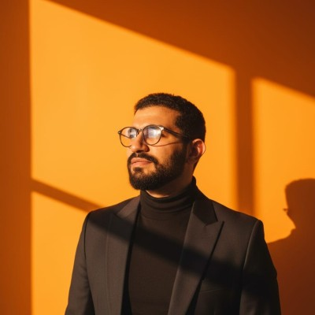

GitHub · QA / QC / QMS
QA وQC وQMS: كيف تختلف المسؤوليات اليومية؟
دليل يفرق بين ضمان الجودة، ومراقبة الجودة، ونظام إدارة الجودة من خلال المسؤوليات اليومية.
قراءة المادةQUALITY ENGINEERING
Senior QA/QC Engineer | Quality Systems, Continuous Improvement & Power BI
Riyadh, Saudi Arabia

I am Ahmed Khalawy, a mechanical engineer and Senior QA/QC Engineer based in Riyadh. My work connects quality systems, manufacturing and construction with practical controls, continuous improvement and data analysis. I share experience in ISO 9001 QMS, inspection planning, RCA, CAPA, Power BI and team development.
أنا احمد خلوي، مهندس ميكانيكا ومهندس جودة أول مقيم بالرياض. أعمل على ربط أنظمة الجودة في التصنيع والإنشاءات بضوابط عملية والتحسين المستمر وتحليل البيانات. أشارك خبرتي في أنظمة ISO 9001، وتخطيط الفحص، وتحليل الأسباب الجذرية، والإجراءات التصحيحية، وPower BI، وتطوير الفرق.
Published guides · مواد تعليمية منشورة
GitHub · QA / QC / QMS
دليل يفرق بين ضمان الجودة، ومراقبة الجودة، ونظام إدارة الجودة من خلال المسؤوليات اليومية.
قراءة المادةMedium · RCA
مثال تدريبي يوضح كيف تفصل الفرضيات عن الأدلة وتتحقق من فعالية الإجراء التصحيحي.
قراءة المادةGitBook · Document control
سجل تعليمي وخطوات عملية تربط مراجعة الوثيقة بالاعتماد والتوزيع والنسخة المتاحة للاستخدام.
قراءة المادة